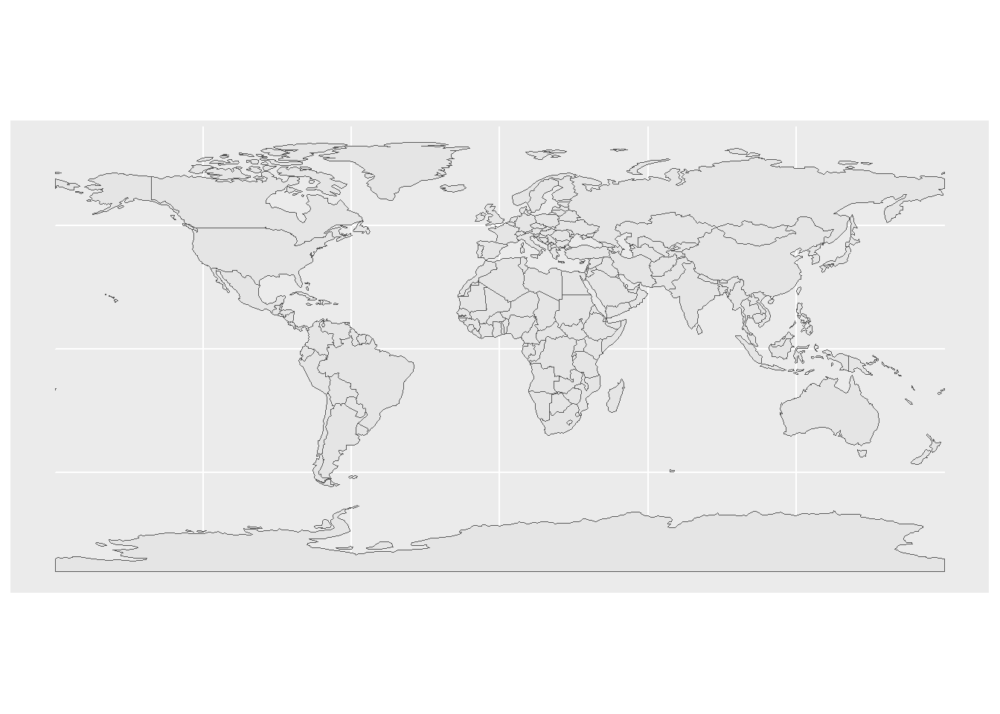
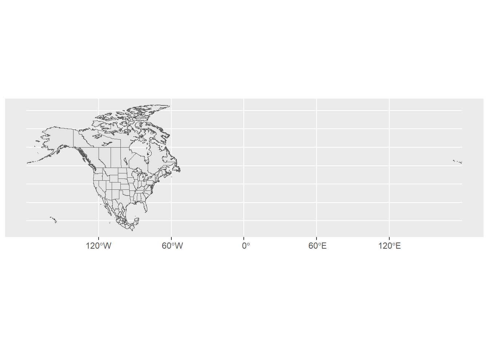

Use this file for practice with the spatial viz in-class activity. Refer to the class website for details.
#6.1 & 6.2 Review Simpson's Paradox# Load tidyverse package for plotting and wranglinglibrary(tidyverse)
Warning: package 'tidyverse' was built under R version 4.4.3
Warning: package 'ggplot2' was built under R version 4.4.2
Warning: package 'tibble' was built under R version 4.4.2
Warning: package 'tidyr' was built under R version 4.4.2
Warning: package 'readr' was built under R version 4.4.2
Warning: package 'purrr' was built under R version 4.4.2
Warning: package 'dplyr' was built under R version 4.4.2
Warning: package 'stringr' was built under R version 4.4.2
Warning: package 'forcats' was built under R version 4.4.2
Warning: package 'lubridate' was built under R version 4.4.2
── Attaching core tidyverse packages ──────────────────────── tidyverse 2.0.0 ──
✔ dplyr 1.1.4 ✔ readr 2.1.5
✔ forcats 1.0.0 ✔ stringr 1.5.1
✔ ggplot2 3.5.1 ✔ tibble 3.2.1
✔ lubridate 1.9.4 ✔ tidyr 1.3.1
✔ purrr 1.0.4
── Conflicts ────────────────────────────────────────── tidyverse_conflicts() ──
✖ dplyr::filter() masks stats::filter()
✖ dplyr::lag() masks stats::lag()
ℹ Use the conflicted package (<http://conflicted.r-lib.org/>) to force all conflicts to become errors
# Import the data and only keep 2 addressesenergy <-read.csv("https://mac-stat.github.io/data/MacNaturalGas.csv") |>mutate(date =as.Date(paste0(month, "/1/", year), "%m/%d/%Y")) |>filter(address !="c")# Check it outhead(energy)
month year price therms hdd address renovated date
1 6 2005 35.21 21 0 a no 2005-06-01
2 7 2005 37.37 21 0 a no 2005-07-01
3 8 2005 36.93 21 3 a no 2005-08-01
4 9 2005 62.36 39 61 a no 2005-09-01
5 10 2005 184.15 120 416 a no 2005-10-01
6 11 2005 433.35 286 845 a no 2005-11-01
ggplot(energy, aes(x = therms, fill = address)) +geom_density(alpha =0.5)
Warning: Removed 12 rows containing non-finite outside the scale range
(`stat_density()`).
ggplot(energy, aes(x = date, y = therms, color = address)) +geom_point()
Warning: Removed 12 rows containing missing values or values outside the scale range
(`geom_point()`).
# When hdd was higher (aka it was colder outside), helps explain why energy use increased after renovations.ggplot(energy, aes(y = hdd, x = renovated)) +geom_boxplot() +facet_wrap(~ address)
#6.3 NEW STUFF: 3 types of spatial viz: Point maps, Contour Maps, Choropleth mapsfave_places <-read.csv("https://hash-mac.github.io/stat112site-s25/data/our_fave_places.csv")head(fave_places)
#loading leaflet package necessary to make mapslibrary(leaflet)
Warning: package 'leaflet' was built under R version 4.4.2
#Loads the plotting frame necessaryleaflet(data = fave_places)
# addTiles adds a basemapleaflet(data = fave_places) |>addTiles()
# longitude and latitude refer to the variables in our data, although this isn't necessary. addMarkers() is just fine.leaflet(data = fave_places) |>addTiles() |>addMarkers(lng =~longitude, lat =~latitude)
# Load package needed to change colorlibrary(gplots)
Warning: package 'gplots' was built under R version 4.4.2
Attaching package: 'gplots'
The following object is masked from 'package:stats':
lowess
# We can add colored circles instead of markers at each locationleaflet(data = fave_places) |>addTiles() |>addCircles(color =col2hex("red"))
# We can change the basemap with addProviderTiles()# Mark locations with yellow dots. Type providers in the console to view all available providers.# And connect the dots, in their order in the dataset, with green lines# (These green lines don't mean anything here, but would if this were somebody's travel path!)leaflet(data = fave_places) |>addProviderTiles("USGS") |>addCircles(weight =10, opacity =1, color =col2hex("yellow")) |>addPolylines(lng =~longitude,lat =~latitude,color =col2hex("green")) #colors need to us col2hex() function
#Exercise 3: Starbucks data# Import starbucks location datastarbucks <-read.csv("https://mac-stat.github.io/data/starbucks.csv")# This is to filter the starbucks data to only include MN starbucksstarbucks_mn <- starbucks |>filter(Country =="US", State.Province =="MN")leaflet(data = starbucks_mn) |>addTiles() |>addCircles(color =col2hex("green"))
Assuming "Longitude" and "Latitude" are longitude and latitude, respectively
#Exercise 3: A simple coordinates (long and latitude) of world starbucks locationsggplot(starbucks, aes(x = Longitude, y = Latitude)) +geom_point(alpha =0.2)
Warning: Removed 1 row containing missing values or values outside the scale range
(`geom_point()`).
#Exercise 4: Adding a country-level background to Starbucks map#Load the packagelibrary(rnaturalearth)
Warning: package 'rnaturalearth' was built under R version 4.4.2
# Get info about country boundaries across the world# in a "sf" or simple feature formatworld_boundaries <-ne_countries(returnclass ="sf")# What does this code produce?# What geom are we using for the point map?ggplot(world_boundaries) +geom_sf()

# Load package needed to change map themelibrary(mosaic)
Warning: package 'mosaic' was built under R version 4.4.2
Registered S3 method overwritten by 'mosaic':
method from
fortify.SpatialPolygonsDataFrame ggplot2
The 'mosaic' package masks several functions from core packages in order to add
additional features. The original behavior of these functions should not be affected by this.
Attaching package: 'mosaic'
The following object is masked from 'package:Matrix':
mean
The following objects are masked from 'package:dplyr':
count, do, tally
The following object is masked from 'package:purrr':
cross
The following object is masked from 'package:ggplot2':
stat
The following objects are masked from 'package:stats':
binom.test, cor, cor.test, cov, fivenum, IQR, median, prop.test,
quantile, sd, t.test, var
The following objects are masked from 'package:base':
max, mean, min, prod, range, sample, sum
# Add a point for each Starbucks# NOTE: The Starbucks info is in our starbucks data, not world_boundaries# How does this change how we use geom_point?!ggplot(world_boundaries) +geom_sf() +geom_point(data = starbucks,aes(x = Longitude, y = Latitude),alpha =0.3, size =0.2, color ="darkgreen" ) +theme_map()
Warning: Removed 1 row containing missing values or values outside the scale range
(`geom_point()`).
#Exercise 5: Make starbucks map of only some countries (US, CAN, MEX)# We'll learn this syntax soon! Don't worry about it now.starbucks_cma <- starbucks |>filter(Country %in%c('CA', 'MX', 'US'))cma_boundaries <-ne_states(country =c("canada", "mexico", "united states of america"),returnclass ="sf")# Just the boundariesggplot(cma_boundaries) +geom_sf()

# Add the points# And zoom inggplot(cma_boundaries) +geom_sf() +geom_point(data = starbucks_cma,aes(x = Longitude, y = Latitude),alpha =0.3,size =0.2,color ="darkgreen" ) +coord_sf(xlim =c(-179.14, -50)) +theme_map()
#Exercise 6: State and County level Mapstarbucks_midwest <- starbucks |>filter(State.Province %in%c("MN", "ND", "SD", "WI"))# Load packageslibrary(sf)
Warning: package 'sf' was built under R version 4.4.2
Linking to GEOS 3.13.0, GDAL 3.10.1, PROJ 9.5.1; sf_use_s2() is TRUE
library(maps)
Warning: package 'maps' was built under R version 4.4.2
Attaching package: 'maps'
The following object is masked from 'package:purrr':
map
# Get the boundariesmidwest_boundaries <-st_as_sf( maps::map("county",region =c("minnesota", "wisconsin", "north dakota", "south dakota"), fill =TRUE, plot =FALSE))# Check it outhead(midwest_boundaries)
Simple feature collection with 6 features and 1 field
Geometry type: MULTIPOLYGON
Dimension: XY
Bounding box: xmin: -96.81268 ymin: 45.05167 xmax: -93.01397 ymax: 48.53526
Geodetic CRS: +proj=longlat +ellps=clrk66 +no_defs +type=crs
ID geom
minnesota,aitkin minnesota,aitkin MULTIPOLYGON (((-93.03689 4...
minnesota,anoka minnesota,anoka MULTIPOLYGON (((-93.51817 4...
minnesota,becker minnesota,becker MULTIPOLYGON (((-95.14537 4...
minnesota,beltrami minnesota,beltrami MULTIPOLYGON (((-95.58655 4...
minnesota,benton minnesota,benton MULTIPOLYGON (((-93.77027 4...
minnesota,big stone minnesota,big stone MULTIPOLYGON (((-96.10794 4...
# Point map (we made this earlier)ggplot(cma_boundaries) +geom_sf() +geom_point(data = starbucks_cma,aes(x = Longitude, y = Latitude),alpha =0.3,size =0.2,color ="darkgreen" ) +coord_sf(xlim =c(-179.14, -50), ylim =c(14.54, 83.11)) +theme_map()
Warning: Using `size` aesthetic for lines was deprecated in ggplot2 3.4.0.
ℹ Please use `linewidth` instead.
#Exercise 8 Choropleth maps at state and county level election dataelections_by_state <-read.csv("https://mac-stat.github.io/data/election_2020_by_state.csv")elections_by_counties <-read.csv("https://mac-stat.github.io/data/election_2020_county.csv")# Don't worry about the code to wrangle election data by state and county.elections_by_state <- elections_by_state |>filter(state_abbr !="DC") |>select(state_name, state_abbr, repub_pct_20) |>mutate(repub_20_categories =cut(repub_pct_20, breaks =seq(30, 70, by =5), labels =c("30-34", "35-39", "40-44", "45-49","50-54", "55-59", "60-64", "65-70"), include.lowest =TRUE))elections_by_counties <- elections_by_counties |>select(state_name, state_abbr, county_name, county_fips, repub_pct_20, median_age, median_rent) |>mutate(repub_20_categories =cut(repub_pct_20, breaks =seq(0, 100, by =10),labels =c("0-9", "10-19", "20-29", "30-39", "40-49","50-59", "60-69", "70-79", "80-89", "90-100"),include.lowest =TRUE))# Get the latitude and longitude coordinates of state boundariesstates_map <-map_data("state")# Check it outhead(states_map)
long lat group order region subregion
1 -87.46201 30.38968 1 1 alabama <NA>
2 -87.48493 30.37249 1 2 alabama <NA>
3 -87.52503 30.37249 1 3 alabama <NA>
4 -87.53076 30.33239 1 4 alabama <NA>
5 -87.57087 30.32665 1 5 alabama <NA>
6 -87.58806 30.32665 1 6 alabama <NA>
head(elections_by_state)
state_name state_abbr repub_pct_20 repub_20_categories
1 alabama AL 62.03 60-64
2 arkansas AR 62.40 60-64
3 arizona AZ 49.06 45-49
4 california CA 34.33 30-34
5 colorado CO 41.90 40-44
6 connecticut CT 39.21 35-39
##Important detail: Note that the region variable in states_map, and the state_name variable in elections_by_state both label states by the full name in lower case letters. This is critical to the background map and our data being able to communicate.#Mapping a basic map of repub_pct_20 by state.# Note where the dataset, elections_by_state, is used# Note where the background map, states_map, is usedggplot(elections_by_state, aes(map_id = state_name, fill = repub_pct_20)) +geom_map(map = states_map) +expand_limits(x = states_map$long, y = states_map$lat) +theme_map()
# Making it nicer!ggplot(elections_by_state, aes(map_id = state_name, fill = repub_pct_20)) +geom_map(map = states_map) +expand_limits(x = states_map$long, y = states_map$lat) +theme_map() +scale_fill_gradientn(name ="% Republican", colors =c("blue", "purple", "red"), values = scales::rescale(seq(0, 100, by =5)))
#--------------------------------------------------------------#plotting the descretized version (rep_20_categories)ggplot(elections_by_state, aes(map_id = state_name, fill = repub_20_categories)) +geom_map(map = states_map) +expand_limits(x = states_map$long, y = states_map$lat) +theme_map()
# Load package needed for refining color palettelibrary(RColorBrewer)# Now fix the colorsggplot(elections_by_state, aes(map_id = state_name, fill = repub_20_categories)) +geom_map(map = states_map) +expand_limits(x = states_map$long, y = states_map$lat) +theme_map() +scale_fill_manual(values =rev(brewer.pal(8, "RdBu")), name ="% Republican")
#----------------------------------------------------------#Adding a starbucks layer to our mapstarbucks_us <- starbucks |>filter(Country =="US")# Map itggplot(elections_by_state, aes(map_id = state_name, fill = repub_20_categories)) +geom_map(map = states_map) +geom_point(data = starbucks_us,aes(x = Longitude, y = Latitude),size =0.05,alpha =0.2,inherit.aes =FALSE ) +expand_limits(x = states_map$long, y = states_map$lat) +theme_map() +scale_fill_manual(values =rev(brewer.pal(8, "RdBu")), name ="% Republican")
#Knowledge check: We used geom_sf() for point maps. What geom do we use for choropleth maps?#geom_map()
#County level Choropleth maps# Get the latitude and longitude coordinates of county boundarieslibrary(socviz)
Warning: package 'socviz' was built under R version 4.4.2
# DATA WRANGLE to communicate with background map# Add 0's at the beginning of any fips_code that's fewer than 5 numbers long# Don't worry about the syntaxelections_by_counties <- elections_by_counties |>mutate(county_fips =as.character(county_fips)) |>mutate(county_fips =ifelse(nchar(county_fips) ==4, paste0("0", county_fips), county_fips))#mapping republican support by countyggplot(elections_by_counties, aes(map_id = county_fips, fill = repub_20_categories)) +geom_map(map = county_map) +scale_fill_manual(values =rev(brewer.pal(10, "RdBu")), name ="% Republican") +expand_limits(x = county_map$long, y = county_map$lat) +theme_map() +theme(legend.position ="right") +coord_equal()
Source Code
---title: "Spatial Viz"---Use this file for practice with the **spatial viz** in-class activity. Refer to the class website for details.```{r}#6.1 & 6.2 Review Simpson's Paradox# Load tidyverse package for plotting and wranglinglibrary(tidyverse)# Import the data and only keep 2 addressesenergy <-read.csv("https://mac-stat.github.io/data/MacNaturalGas.csv") |>mutate(date =as.Date(paste0(month, "/1/", year), "%m/%d/%Y")) |>filter(address !="c")# Check it outhead(energy)ggplot(energy, aes(x = therms, fill = address)) +geom_density(alpha =0.5)ggplot(energy, aes(x = date, y = therms, color = address)) +geom_point() # When hdd was higher (aka it was colder outside), helps explain why energy use increased after renovations.ggplot(energy, aes(y = hdd, x = renovated)) +geom_boxplot() +facet_wrap(~ address)``````{r}#6.3 NEW STUFF: 3 types of spatial viz: Point maps, Contour Maps, Choropleth mapsfave_places <-read.csv("https://hash-mac.github.io/stat112site-s25/data/our_fave_places.csv")head(fave_places)#loading leaflet package necessary to make mapslibrary(leaflet)#Loads the plotting frame necessaryleaflet(data = fave_places)# addTiles adds a basemapleaflet(data = fave_places) |>addTiles()# longitude and latitude refer to the variables in our data, although this isn't necessary. addMarkers() is just fine.leaflet(data = fave_places) |>addTiles() |>addMarkers(lng =~longitude, lat =~latitude)``````{r}# Load package needed to change colorlibrary(gplots)# We can add colored circles instead of markers at each locationleaflet(data = fave_places) |>addTiles() |>addCircles(color =col2hex("red"))# We can change the basemap with addProviderTiles()# Mark locations with yellow dots. Type providers in the console to view all available providers.# And connect the dots, in their order in the dataset, with green lines# (These green lines don't mean anything here, but would if this were somebody's travel path!)leaflet(data = fave_places) |>addProviderTiles("USGS") |>addCircles(weight =10, opacity =1, color =col2hex("yellow")) |>addPolylines(lng =~longitude,lat =~latitude,color =col2hex("green")) #colors need to us col2hex() function``````{r}#Exercise 3: Starbucks data# Import starbucks location datastarbucks <-read.csv("https://mac-stat.github.io/data/starbucks.csv")# This is to filter the starbucks data to only include MN starbucksstarbucks_mn <- starbucks |>filter(Country =="US", State.Province =="MN")leaflet(data = starbucks_mn) |>addTiles() |>addCircles(color =col2hex("green"))``````{r}#Exercise 3: A simple coordinates (long and latitude) of world starbucks locationsggplot(starbucks, aes(x = Longitude, y = Latitude)) +geom_point(alpha =0.2) ``````{r}#Exercise 4: Adding a country-level background to Starbucks map#Load the packagelibrary(rnaturalearth)# Get info about country boundaries across the world# in a "sf" or simple feature formatworld_boundaries <-ne_countries(returnclass ="sf")# What does this code produce?# What geom are we using for the point map?ggplot(world_boundaries) +geom_sf()# Load package needed to change map themelibrary(mosaic)# Add a point for each Starbucks# NOTE: The Starbucks info is in our starbucks data, not world_boundaries# How does this change how we use geom_point?!ggplot(world_boundaries) +geom_sf() +geom_point(data = starbucks,aes(x = Longitude, y = Latitude),alpha =0.3, size =0.2, color ="darkgreen" ) +theme_map()#Exercise 5: Make starbucks map of only some countries (US, CAN, MEX)# We'll learn this syntax soon! Don't worry about it now.starbucks_cma <- starbucks |>filter(Country %in%c('CA', 'MX', 'US'))cma_boundaries <-ne_states(country =c("canada", "mexico", "united states of america"),returnclass ="sf")# Just the boundariesggplot(cma_boundaries) +geom_sf()# Add the points# And zoom inggplot(cma_boundaries) +geom_sf() +geom_point(data = starbucks_cma,aes(x = Longitude, y = Latitude),alpha =0.3,size =0.2,color ="darkgreen" ) +coord_sf(xlim =c(-179.14, -50)) +theme_map()``````{r}#Exercise 6: State and County level Mapstarbucks_midwest <- starbucks |>filter(State.Province %in%c("MN", "ND", "SD", "WI"))# Load packageslibrary(sf)library(maps)# Get the boundariesmidwest_boundaries <-st_as_sf( maps::map("county",region =c("minnesota", "wisconsin", "north dakota", "south dakota"), fill =TRUE, plot =FALSE))# Check it outhead(midwest_boundaries)# Point map (we made this earlier)ggplot(cma_boundaries) +geom_sf() +geom_point(data = starbucks_cma,aes(x = Longitude, y = Latitude),alpha =0.3,size =0.2,color ="darkgreen" ) +coord_sf(xlim =c(-179.14, -50), ylim =c(14.54, 83.11)) +theme_map()# Contour map geom_density_2d instead of geom_pointggplot(cma_boundaries) +geom_sf() +geom_density_2d(data = starbucks_cma,aes(x = Longitude, y = Latitude),size =0.2,color ="darkgreen" ) +coord_sf(xlim =c(-179.14, -50), ylim =c(14.54, 83.11)) +theme_map()``````{r}#Exercise 8 Choropleth maps at state and county level election dataelections_by_state <-read.csv("https://mac-stat.github.io/data/election_2020_by_state.csv")elections_by_counties <-read.csv("https://mac-stat.github.io/data/election_2020_county.csv")# Don't worry about the code to wrangle election data by state and county.elections_by_state <- elections_by_state |>filter(state_abbr !="DC") |>select(state_name, state_abbr, repub_pct_20) |>mutate(repub_20_categories =cut(repub_pct_20, breaks =seq(30, 70, by =5), labels =c("30-34", "35-39", "40-44", "45-49","50-54", "55-59", "60-64", "65-70"), include.lowest =TRUE))elections_by_counties <- elections_by_counties |>select(state_name, state_abbr, county_name, county_fips, repub_pct_20, median_age, median_rent) |>mutate(repub_20_categories =cut(repub_pct_20, breaks =seq(0, 100, by =10),labels =c("0-9", "10-19", "20-29", "30-39", "40-49","50-59", "60-69", "70-79", "80-89", "90-100"),include.lowest =TRUE))# Get the latitude and longitude coordinates of state boundariesstates_map <-map_data("state")# Check it outhead(states_map)head(elections_by_state) ##Important detail: Note that the region variable in states_map, and the state_name variable in elections_by_state both label states by the full name in lower case letters. This is critical to the background map and our data being able to communicate.#Mapping a basic map of repub_pct_20 by state.# Note where the dataset, elections_by_state, is used# Note where the background map, states_map, is usedggplot(elections_by_state, aes(map_id = state_name, fill = repub_pct_20)) +geom_map(map = states_map) +expand_limits(x = states_map$long, y = states_map$lat) +theme_map() # Making it nicer!ggplot(elections_by_state, aes(map_id = state_name, fill = repub_pct_20)) +geom_map(map = states_map) +expand_limits(x = states_map$long, y = states_map$lat) +theme_map() +scale_fill_gradientn(name ="% Republican", colors =c("blue", "purple", "red"), values = scales::rescale(seq(0, 100, by =5)))#--------------------------------------------------------------#plotting the descretized version (rep_20_categories)ggplot(elections_by_state, aes(map_id = state_name, fill = repub_20_categories)) +geom_map(map = states_map) +expand_limits(x = states_map$long, y = states_map$lat) +theme_map()# Load package needed for refining color palettelibrary(RColorBrewer)# Now fix the colorsggplot(elections_by_state, aes(map_id = state_name, fill = repub_20_categories)) +geom_map(map = states_map) +expand_limits(x = states_map$long, y = states_map$lat) +theme_map() +scale_fill_manual(values =rev(brewer.pal(8, "RdBu")), name ="% Republican")#----------------------------------------------------------#Adding a starbucks layer to our mapstarbucks_us <- starbucks |>filter(Country =="US")# Map itggplot(elections_by_state, aes(map_id = state_name, fill = repub_20_categories)) +geom_map(map = states_map) +geom_point(data = starbucks_us,aes(x = Longitude, y = Latitude),size =0.05,alpha =0.2,inherit.aes =FALSE ) +expand_limits(x = states_map$long, y = states_map$lat) +theme_map() +scale_fill_manual(values =rev(brewer.pal(8, "RdBu")), name ="% Republican")#Knowledge check: We used geom_sf() for point maps. What geom do we use for choropleth maps?#geom_map()``````{r}#County level Choropleth maps# Get the latitude and longitude coordinates of county boundarieslibrary(socviz)data(county_map) # Check it outhead(county_map)# DATA WRANGLE to communicate with background map# Add 0's at the beginning of any fips_code that's fewer than 5 numbers long# Don't worry about the syntaxelections_by_counties <- elections_by_counties |>mutate(county_fips =as.character(county_fips)) |>mutate(county_fips =ifelse(nchar(county_fips) ==4, paste0("0", county_fips), county_fips))#mapping republican support by countyggplot(elections_by_counties, aes(map_id = county_fips, fill = repub_20_categories)) +geom_map(map = county_map) +scale_fill_manual(values =rev(brewer.pal(10, "RdBu")), name ="% Republican") +expand_limits(x = county_map$long, y = county_map$lat) +theme_map() +theme(legend.position ="right") +coord_equal()```